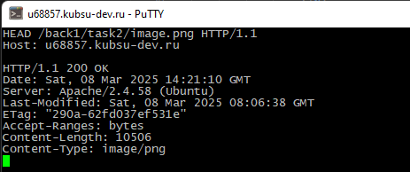

С помощью программы Putty соединимся по RAW через порт 80 с учебным сервером:
1. Получим главную страницу методом GET в протоколе HTTP 1.0:
Ответ 200 ОК сообщает о том, что запрос был успешно выполнен.
2. Получим внутреннюю страницу, расположенную в папке task2, методом GET в протоколе HTTP 1.1:
Ответ 200 ОК сообщает о том, что запрос был успешно выполнен.
Также выводится размер и тип контента и код внутренней страницы.
3. Определим размер файла file.tar.gz. Для этого используем метод HEAD. Метод HEAD в HTTP запрашивает только заголовки HTTP-ответа, но не само тело ответа. :
Content-Length сообщает о размере файла file.tar.gz (11335 байтов)
4. Определим медиатип ресурса /image.png, используя HEAD:
Content-Type сообщает о медиатипе файла image.png (медиатип image/png)
5. Отправка комментария на сервер по адресу /index.php с помощью метода POST. В команде comment=... указывается комментарий.
6. Получим первые 100 байт файла /file.tar.gz. Для этого укажем Range: bytes=0-99
7. Определим кодировку ресурса /index.php. charset=UTF-8 сообщает браузеру, что для кодирования тела HTTP ответа использовалась кодировка UTF-8.